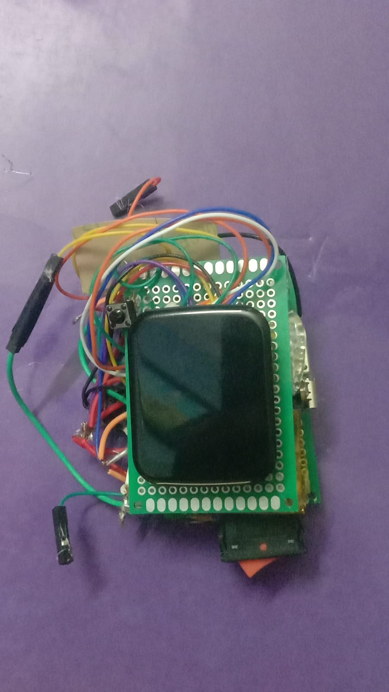
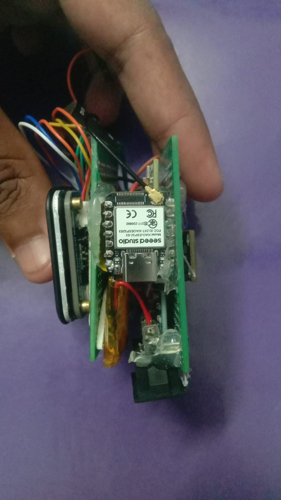
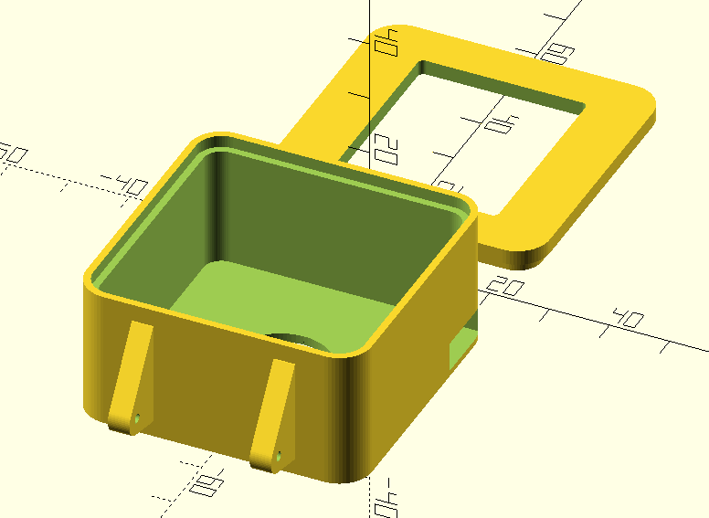
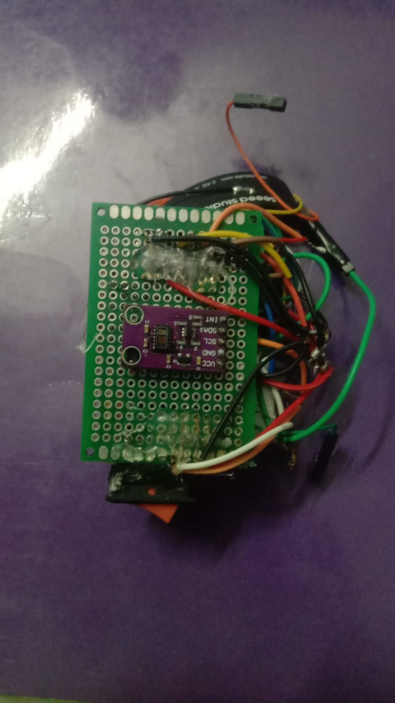

The problem
Personal safety devices are usually either bulky, obvious, or dependent on a phone. We wanted something a person could actually wear every day — discreet, connected, and built around rapid help when it matters.
My role
I lead the hardware: architecture, schematic capture, component selection, and the physical design of the watch. Product design is shared with my co-founder; software and business decisions are joint.
What I built
A 4-layer PCB based on the ESP32-S3 with 4G/LoRa connectivity and biometric sensing, taken from a blank schematic through a full component BOM to a working prototype. The enclosure and industrial design went through several CAD iterations alongside the electronics.
Where it stands
Prototype stage. The startup was incubated at Sathyabama, secured an EDII TN IVP Voucher A grant, and was shortlisted for CDIIC incubation with a pitch in September 2026.



